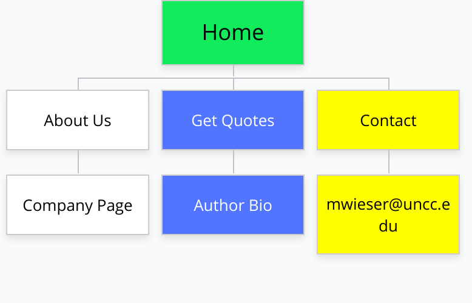
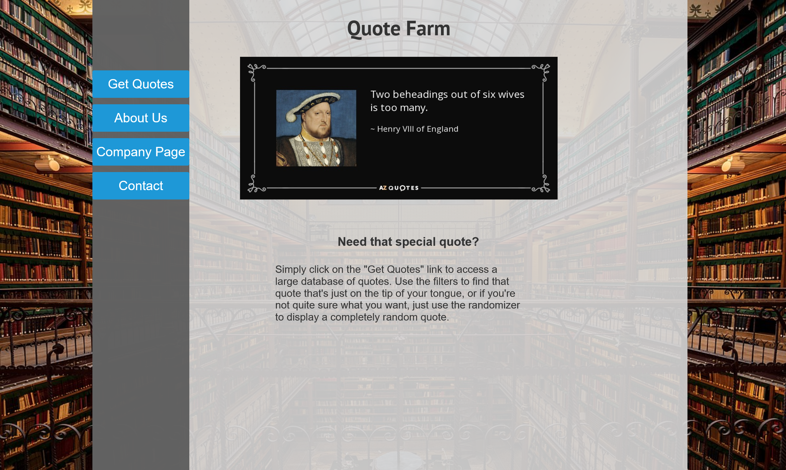

Design Document
Quote Farm
Matthew Wieser
10/17/2021
Project Name: Quote Farm
Project Overview:
- This is a website that generates famous quotes based on certain criteria. For example, a user might wish to generate a quote randomly. Other times a user might want to pull a list of quotes by a particular historical figure or by the nature of the quote (uplifting, funny, etc...). This is pretty similar to the site azquotes.com, but I think that I can improve it in some ways and make it more enjoyable for the user.
- The intended user for this website is someone that enjoys reading and sharing interesting quotes from a wide range of modern and historical figures. Another type of user might be a student or journalist looking for quotes to back up his or her argument.
- The content of this website will consist of pages that direct the user to search for quotes randomly, by content-type, or by a particular author. It will likely have to search an internet database for the quotes. Each quote should contain the quote, who it's attributed to, and a picture of the person who said the quote, if available.
Client Information:
- The name of my client is Kimberly Ryan, my mother.
- Kim Ryan is a bank teller at Bank of the Ozarks
- Email: childofthe7nties@aol.com
- Phone number: (704) 472-2014
Site Map:

Site Map
Page Design: Home Page
- Page Name: Home
- Contains the Quote Farm logo, a sample quote, and links to other parts of the site.
- The audience for this page would be the users. This is where the users will land when they first visit the site.
- The content of the page will be the Quote Farm logo, a sample quote that changes each time the page is visited, a brief explanation of the site, and links to other areas of the site.

Page Design: About Us
- Page Name: About Us
- Contains information about myself, my fake company, and the inspiration for the website, as well as a more in-depth explanation of how the site works.
- The audience for this page is someone who is looking for more information about the creator of the site as well as the company that made the site.
- Contains an explanation of the companies values, the main designer of the site, and more detailed information on how the site works.
Page Design: Company Page
- Page Name: ManiacRazorbackWombat LLC
- Contains further information about the company, company values, and links to other projects.
- The audience is potential clients, or others who want to see what else ManiacRazorbackWombat LLC has created.
- Detailed descriptions of other projects and company information.
Page Design: Author Bio
- Page Name: Author Bio
- Contains a description of the author's life and accomplishments. This can be accessed either by clicking on the author's name or by clicking on his or her image next to a quote. This will likely just contain snippets of information from Wikipedia. For example, I might simply extract the intro paragraph from Wikipedia and use that. This might simply be a link that automatically searches for the accompanying Wikipedia article.
- Audience is users who want to dig deeper into a historical figure's life.
- A list of authors organized alphabetically from A-Z with links to the corresponding Wikipedia articles on their lives.